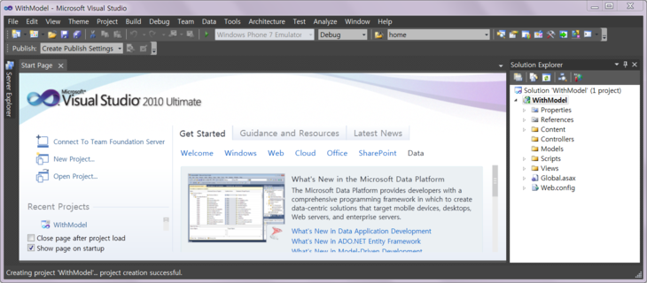
우선 HomeController에요.
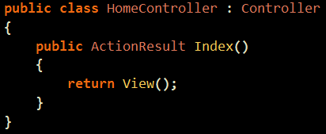
View() 라는 메소드를 사용해주면 ActionResult를 리턴하게 되는데요.
우선 기본적으로 자기 액션과 같은 이름의 View를 찾는답니다.
따라서 Index라는 View를 찾게 되겠지요.
어쨌거나, 3번째 오버라이딩된 메소드를 보시면
다음과 같이 object Model을 넘긴답니다.
MVC의 이론과 관련된 내용은 기억이 잘 안나는데 16, 17, 18강 중에 하나에서 다룬답니다.
그 전에 살짝 모델이 무엇인지 보도록 하는 거니까요. 'ㅁ'
부담 갖지 말고 보시기 바래요 .. !
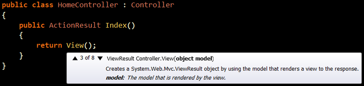
쨌건, Person 이라는 클래스를 만들어주었답니다.
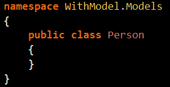
그리고 설정
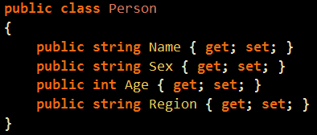
이제 HomeController로 와서 ListOfPerson을 만들어 줍시다.
예전 ViewBag 때도 이와 비슷한 것을 했었지만 인텔리센스가 뜨지 않았답니다.
"뜨건 안 뜨건 뭐가 문제인가요..?"
『문제될 것은 없지만 개발 시간의 단축을 가져올 수 있으니 두근두근 하시고 나중에 봅시다.』
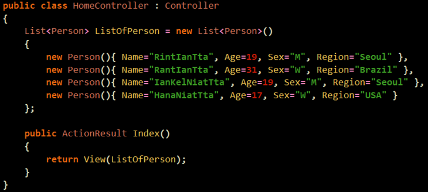
이제 View를 만드시는데요.
『Create a Strongly-Typed View』를 선택해주세요.
그리고 대충 List 선택해줍니다.
왜냐면 우리가 지금넘긴 모델이 List니까요
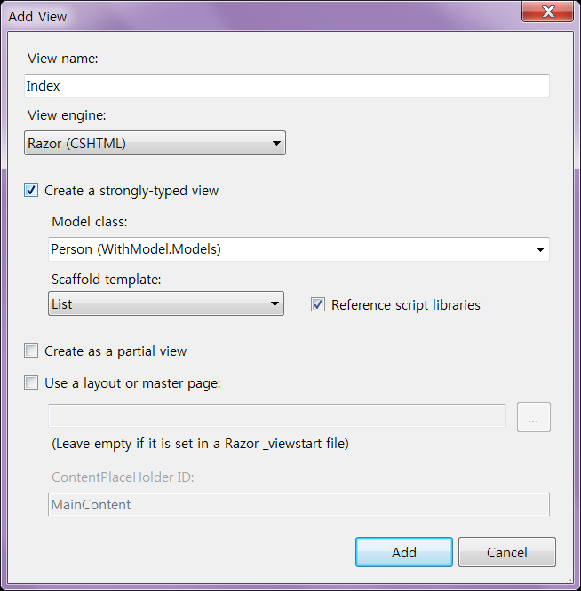
다음과 같은 결과가 뜹니다.
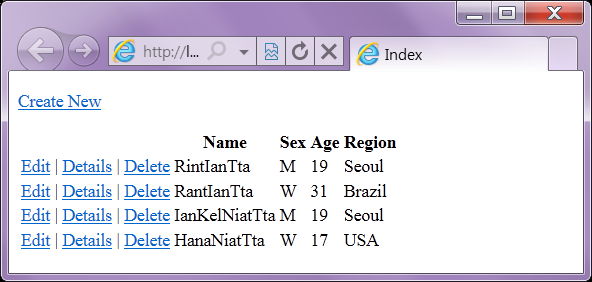
View를 보시면 약간 다른 녀석이 생겨있답니다.
아, 소스는 조금 지운 것이랍니다. 무엇인가 막 쓰여계실거에요 .. !
『@model IEnumerable<>』이라고 되어 계실 겁니다.
Model 이라는 프로퍼티의 자료형을 IEnumerable<>로 하겠다는 겁니다.
"어라, Model 이 어디 있는데요..?"
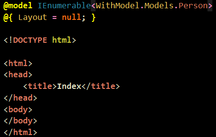
요기있네요.
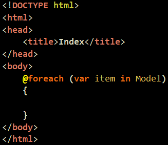
이제 인텔리센스가 뜹니다.
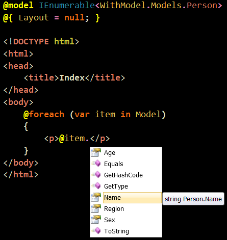
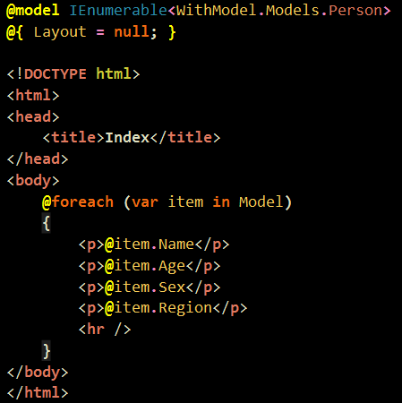
결과입니다.
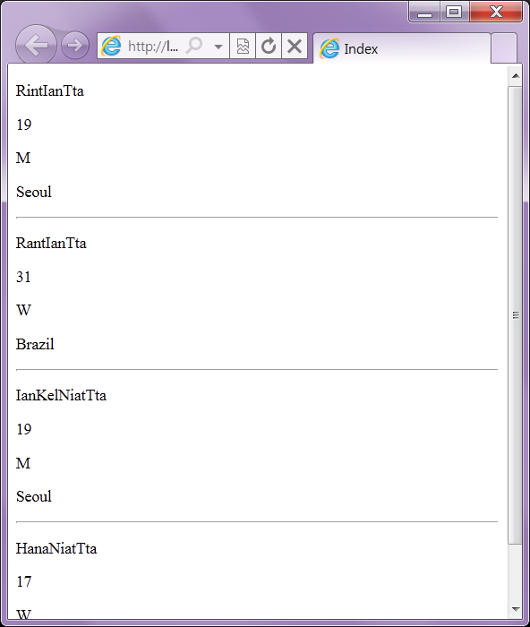
"어라, 그럼 모델은 자료형이 무조건 하나인가요?"
『네』
"두개 넘기고 싶으면요 .. ?"
『ViewBag 있잖아요』